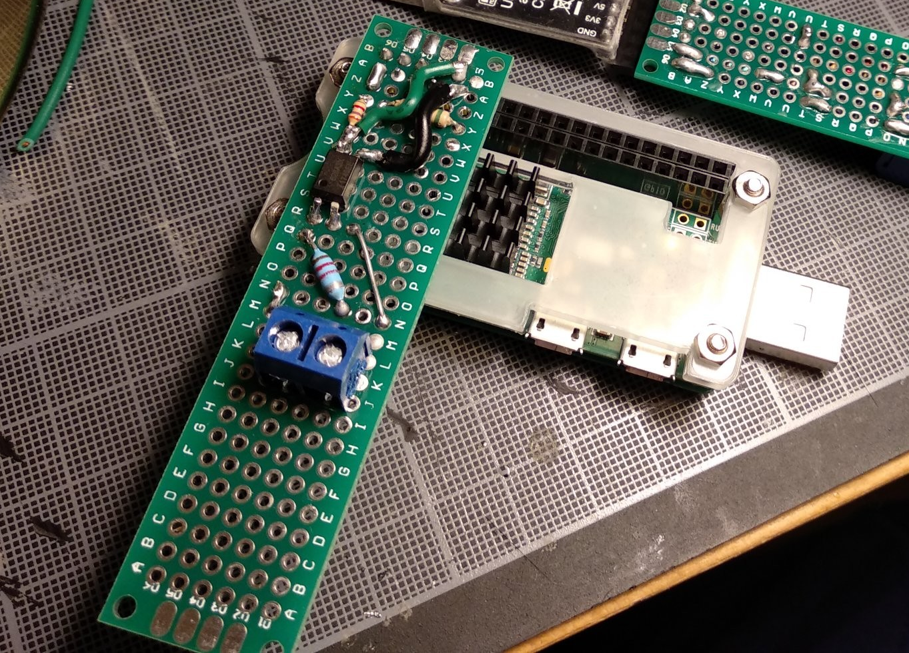
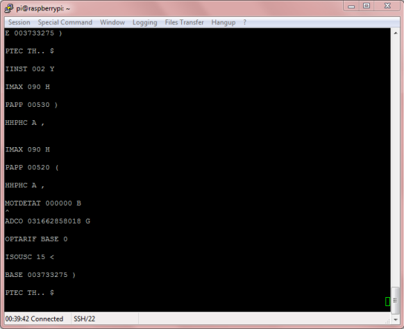

Recupération de la sortie télé-info du Linky avec Raspberry Pi
Matériel
Nous utiliserons un Raspberry Pi Zero W avec Raspbian Stretch Lite version 2018-11-13 : www.raspberrypi.org
Schema du circuit pour convertir la sortie télé-info pour Raspberry Pi
TODO
Test avec le Raspberry Pi
Nous nous sommes connecté via ssh sur le Raspberry Pi en utilisant le mode USB/Ethernet Gadget
Nous configurons le port série pour être adapté à la vitesse du Linky
sudo stty -F /dev/ttyS0 sane -parenb 1200 cs7
Affichage du contenu du port série toutes les secondes (le linky)
watch -t -n 1 cat /dev/ttyS0
Résulats
Interprétation des informations
Enedis fourni un document listant les specifications de la sortie télé-info sur son site :Enedis-NOI-CPT_54E.pdf ou Enedis-NOI-CPT_54E.pdf
Les trames sont composés d'une étiquette et une valeur, par exemple : BASE 003733275
Les étiquettes principales sont les suivantes :
| Etiquette | Désignation |
|---|---|
MOTDETAT |
Mot d’état (autocontrôle) |
ADCO |
Identifiant du compteur |
OPTARIF |
Option tarifaire (type d’abonnement) |
ISOUSC |
Intensité souscrite |
BASE |
Consommation (en Wh) |
PTEC |
Période tarifaire en cours |
IINST |
Intensité instantanée (en ampères) |
IMAX |
Intensité maximale (en ampères) |
PAPP |
Puissance apparente (en Volt.ampères) |
HHPHC |
Groupe horaire si option = heures creuses ou tempo |